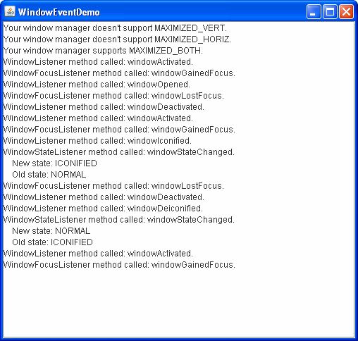

Lección: Escribiendo Listener Events
Sección: Implementando Listeners para los Eventos Comunmente Manejados
Cómo Escribir Window Listeners
Esta sección explica cómo implementar tres clases de manejadores de eventos relacionados con las ventanas:
WindowListener, WindowFocusListener, y WindowStateListener. Estos tres
listeners manejan objetos WindowEvent. Los métodos en los tres manejadores de eventos son
implementados por la clase abstracta WindowAdapter.
Cuando ha sido registrado el listener apropiado en una ventana (tal como un marco o un diálogo), los eventos de ventana se disparan justo después de que la actividad o estado de la ventana ha ocurrido. Se considera una ventana como "propietaria del foco", si esta ventana recibe la entrada del teclado.
Las siguientes actividades o estados de la ventana pueden preceder a un evento de ventana:
- Abrir una ventana — Mostrar una ventana por primera vez.
- Cerrar una ventana — Eliminar la ventana de la pantalla.
- Iconificar una ventana — Reducir la ventana a un icono en el escritorio.
- Deiconificar una ventana — Restaurar la ventana a su tamaño original.
- Ventana focalizada — La ventana que contiene el "propietario del foco"
- Ventana activada (marco o diálogo) — Esta ventana o es la ventana focalizada, o es propietaria de la ventana focalizada.
- Ventana desactivada — Esta ventana ha perdido el foco. Para más información sobre el foco, vea la especificación Subsistema de Foco de AWT (en inglés).
-
Maximizar la ventana — incrementar el tamaño de una ventana al tamaño máximo disponible, ya sea en
la dirección vertical, la dirección horizontal, o en ambas direcciones.
El interfaz
WindowListenerdefine métodos que manejan la mayoría de los eventos de ventana, tales como los eventos de abrir o cerrar la ventana, activación o desactivación de la ventana, e iconificación y deiconificación de la ventana.Los otros dos interfaces de window listener son
WindowFocusListeneryWindowStateListener.WindowFocusListenercontiene métodos para detectar cuando una ventana se convierte en propietaria del foco o si pierde el estado de propietaria del foco.WindowStateListenertiene un único método para detectar un cambio en el estado de la ventana, tal como cuando la ventana se iconifica, se desiconifica, se maximiza, o se restaura a su tamaño normal.Aunque puede usar los métodos de
WindowListenerpara detectar algunos estados de la ventana, tales como la iconificación. hay dos razones por las queWindowStateListenerdebería ser preferible: tiene sólo un método que implementar, y ofrece soporte para la maximización.
Nota: No todos/as los/las gestores de ventana/plataformas nativas soportan todos los estados de ventana. El métodojava.awt.ToolkitisFrameStateSupported(int)puede ser utilizado para determinar si un estado particular de ventana es soportado por un gestor de ventanas en particular. El ejemplo WindowEventDemo, descrito más tarde en esta sección, muestra cómo se puede usar este método.
Los window listeners se usan habitualmente par implementer un comportamiento personalizado en el cierre de una ventana. Por ejemplo, se usa un window listener para salvar los datos antes de cerrar la ventana, o para salir del programa cuando se cierra la última ventana.
Un usuario no necesita necesariamente implementar un window listener para especificar qué debería hacer una ventana cuando el usuario la cierra. Por defecto, cuando el usuario cierra una ventana la ventana se convierte en invisible. Para especificar un comportamiento diferente, use el método
Cuando se elimina la última ventana visualizable dentro de la máquina virtual Java (MV), la MV puede terminar. Note, sin embargo, que puede haber un retardo antes de que el programa terminte automáticamente, y que bajo algunas circunstancias el programa podría mantenerse en ejecución. Es más rápido y más seguro terminar explícitamente el programa usandosetDefaultCloseOperationde las clasesJFrameyJDialog. Para implementar un manejador de cierre de ventana, use el métodosetDefaultCloseOperation(WindowConstants.DO_NOTHING_ON_CLOSE)para habilitar que el window listener proporcione todas las tareas de cierre de la ventana. Vea Responder a Eventos de Cierre de Ventana para los detalles de cómo usarsetDefaultCloseOperation.System.exit(int). Vea Problemas de subprocesos de AWT (en inglés) para más información.Los window listeners son también usados habitualmente para parar hilos y liberar recursos cuando se iconifica una venta, y para reabrirlos de nuevo cuando la ventana se desiconifica. Esto evita que se use innecesariamente el procesador u otros recursos. Por ejemplo, cuando una ventna que contiene animaciones se iconifica, debería para su hilo de animación y liberar cualquier buffer grande. Cuando la ventana se desiconifica, puede iniciar el hilo de nuevo y recrear los buffers.
El ejemplo siguiente demuestra los eventos de ventana. Un área de texto no editable informa de todos los eventos de ventana que son disparados por su ventana. Esta demostración implementa todos los métodos en los interfaces
WindowListener,WindowFocusListener, yWindowStateListener. Puede encontrar el código de la demostración enWindowEventDemo.java.
Intente esto:-
Pulse el botón Lanzar para ejecutar WindowEventDemo usando
Java™ Web Start (
descargue KDJ 7 o
posterior). Alternativamente, para compilar y ejecutar el ejemplo por sí mismo,
consulte el
índice de ejemplos.

- Cuando la ventana aparece, ya se muestran varios mensajes. Una línea informa si su gestor de ventanas soporta MAXIMIZED_BOTH. Si el gestor de ventanas no soporta otros estados de ventana, también se informa de esta condición. A continuación, se muestran varias líneas, informando de que el window listener de la ventana ha recibido los eventos ventana-abierta, ventana-activada y ventana-tiene-el-foco. Todos los mensajes que se visualizan en la ventana son también enviados a la salida estándar.
- Pulse otra ventana. Los mensajes "la ventana perdió el foco" y "ventana desactivada" serán visualizados. Si esta ventana no es un marco o diálogo, recibirá los eventos activado o desactivado.
- Pulse la ventana WindowEventDemo. Verá los mensajes "ventana activada" y "ventana-tiene-el-foco".
- Iconifique la ventana, usando los controles de la ventana. Se visualizan dos mensajes de iconficación, uno desde el window listener y el otro desde el window state listener. A menos que esté mirando la salida estándar, los mensajes no se mostrarán hasta que se desiconifique la ventana. También se informa de los eventos ventana-desactivada y ventana-perdió-el-foco.
-
Deiconifique la ventana. Se visualizan dos mensajes de deiconificación, uno desde el window
listener y el otro desde el window state listener. El método
windowStateChangeden la claseWindowStateListenerda la misma información que usando los métodoswindowIconifiedywindowDeiconifieden la claseWindowListener. También se informa de los eventos ventana-activada y ventana-tiene-el-foco. - Maximize la ventana, si su apariencia ofrece una forma de hacerlo. Dese cuenta de que algunas apariencias que se ejecutan en algunos gestores de ventanas, como la apariencia Java en dtwm, ofrece una forma de maximizar la ventana, pero no se informa de los eventos. Esto es porque dtwm simula la maximización redimensionando la ventana, pero no es un evento real de maximización. Algunas apariencias ofrecen una forma de maximizar la ventana sólo en la dirección vertical u horizontal. Experimente con sus controles de ventana para ver qué opciones están disponibles.
- Cierre la ventana, usando los controles de la ventana. Se visualiza un mensaje de cierre de ventana. Una vez que se ha cerrado la ventana, se envía un mensaje de ventana cerrada a la salida estándar.
Aquí está el código del manejo del evento de ventana de la demostración:
public class WindowEventDemo extends JFrame implements WindowListener, WindowFocusListener, WindowStateListener { ... static WindowEventDemo frame = new WindowEventDemo("WindowEventDemo"); JTextArea display; ... private void addComponentsToPane() { display = new JTextArea(); display.setEditable(false); JScrollPane scrollPane = new JScrollPane(display); scrollPane.setPreferredSize(new Dimension(500, 450)); getContentPane().add(scrollPane, BorderLayout.CENTER); addWindowListener(this); addWindowFocusListener(this); addWindowStateListener(this); checkWM(); } public WindowEventDemo(String name) { super(name); } //Some window managers don't support all window states. public void checkWM() { Toolkit tk = frame.getToolkit(); if (!(tk.isFrameStateSupported(Frame.ICONIFIED))) { displayMessage( "Your window manager doesn't support ICONIFIED."); } else displayMessage( "Your window manager supports ICONIFIED."); if (!(tk.isFrameStateSupported(Frame.MAXIMIZED_VERT))) { displayMessage( "Your window manager doesn't support MAXIMIZED_VERT."); } else displayMessage( "Your window manager supports MAXIMIZED_VERT."); if (!(tk.isFrameStateSupported(Frame.MAXIMIZED_HORIZ))) { displayMessage( "Your window manager doesn't support MAXIMIZED_HORIZ."); } else displayMessage( "Your window manager supports MAXIMIZED_HORIZ."); if (!(tk.isFrameStateSupported(Frame.MAXIMIZED_BOTH))) { displayMessage( "Your window manager doesn't support MAXIMIZED_BOTH."); } else { displayMessage( "Your window manager supports MAXIMIZED_BOTH."); } } public void windowClosing(WindowEvent e) { displayMessage("WindowListener method called: windowClosing."); //A pause so user can see the message before //the window actually closes. ActionListener task = new ActionListener() { boolean alreadyDisposed = false; public void actionPerformed(ActionEvent e) { if (frame.isDisplayable()) { alreadyDisposed = true; frame.dispose(); } } }; Timer timer = new Timer(500, task); //fire every half second timer.setInitialDelay(2000); //first delay 2 seconds timer.setRepeats(false); timer.start(); } public void windowClosed(WindowEvent e) { //This will only be seen on standard output. displayMessage("WindowListener method called: windowClosed."); } public void windowOpened(WindowEvent e) { displayMessage("WindowListener method called: windowOpened."); } public void windowIconified(WindowEvent e) { displayMessage("WindowListener method called: windowIconified."); } public void windowDeiconified(WindowEvent e) { displayMessage("WindowListener method called: windowDeiconified."); } public void windowActivated(WindowEvent e) { displayMessage("WindowListener method called: windowActivated."); } public void windowDeactivated(WindowEvent e) { displayMessage("WindowListener method called: windowDeactivated."); } public void windowGainedFocus(WindowEvent e) { displayMessage("WindowFocusListener method called: windowGainedFocus."); } public void windowLostFocus(WindowEvent e) { displayMessage("WindowFocusListener method called: windowLostFocus."); } public void windowStateChanged(WindowEvent e) { displayStateMessage( "WindowStateListener method called: windowStateChanged.", e); } void displayMessage(String msg) { display.append(msg + newline); System.out.println(msg); } void displayStateMessage(String prefix, WindowEvent e) { int state = e.getNewState(); int oldState = e.getOldState(); String msg = prefix + newline + space + "New state: " + convertStateToString(state) + newline + space + "Old state: " + convertStateToString(oldState); displayMessage(msg); } String convertStateToString(int state) { if (state == Frame.NORMAL) { return "NORMAL"; } String strState = " "; if ((state & Frame.ICONIFIED) != 0) { strState += "ICONIFIED"; } //MAXIMIZED_BOTH is a concatenation of two bits, so //we need to test for an exact match. if ((state & Frame.MAXIMIZED_BOTH) == Frame.MAXIMIZED_BOTH) { strState += "MAXIMIZED_BOTH"; } else { if ((state & Frame.MAXIMIZED_VERT) != 0) { strState += "MAXIMIZED_VERT"; } if ((state & Frame.MAXIMIZED_HORIZ) != 0) { strState += "MAXIMIZED_HORIZ"; } if (" ".equals(strState)){ strState = "UNKNOWN"; } } return strState.trim(); } }La IPA de Window Listener
La IPA de window listener consiste de tres interfaces de window listener y la claseWindowEvent. Sus métodos se listan en las tablas siguientes:- La Interfaz WindowListener
- La Interfaz WindowFocusListener
- La Interfaz WindowStateListener
- La Clase WindowEvent
WindowAdapter.Método Propósito windowOpened(WindowEvent) Llamada justo después de que la ventana monitorizada ha sido mostrada por primera vez. windowClosing(WindowEvent) LLamada en respuesta a una petición del usuario para la ventana monitorizada para que sea cerrada. Para cerrar realmente la ventana, el listener debe invocar al método disposeosetVisible(false)de la ventana.windowClosed(WindowEvent) Llamada justo después de que la ventana monitorizada se haya cerrado. windowIconified(WindowEvent)
windowDeiconified(WindowEvent)Llamada justo después de que la ventana monitorizada se iconifique o desiconifique, respectivamente. windowActivated(WindowEvent)
windowDeactivated(WindowEvent)Llamada justo después de que la ventana monitorizada se active o desactive, respectivamente. Estos métodos no son enviados a ventanas que no son marcos ni diálogos. Por esta razón, se prefieren los métodos windowGainedFocusywindowLostFocuspara determinar cuándo una ventana gano o pierde el foco.La Interfaz WindowFocusListener
Método Propósito windowGainedFocus(WindowEvent)
windowLostFocus(WindowEvent)Llamada justo después de que la ventana monitorizada gana o pierde el foco, respectivamente. La Interfaz WindowStateListener
Método Propósito windowStateChanged(WindowEvent) Llamada justo después de que el estado de la ventana monitorizada se cambie al iconoficarse, deiconoficarse, maximizarse, o ser devuelta a su tamaño normal. El estado está disponible a través de WindowEventcomo una máscara de bits. Los valores posibles, definidos enjava.awt.Frame, son:- NORMAL. Indica que no se han fijado bits de estado.
- ICONIFIED.
- MAXIMIZED_HORIZ.
- MAXIMIZED_VERT.
-
MAXIMIZED_BOTH. Concatena
MAXIMIZED_HORIZyMAXIMIZED_VERT. Un gestor de ventanas puede soportarMAXIMIZED_BOTH, mientras que no soportaMAXIMIZED_HORIZoMAXIMIZED_VERT. El métodojava.awt.ToolkitisFrameStateSupported(int)puede usarse para determinar qué ç estados son soportados por el gestor de ventanas.
Método Propósito Window getWindow() Devuelve la ventana que disparó el evento. Puede usar esto en vez del método getSource.Window getOppositeWindow() Devuelve la otra ventana involucrada en este cambio de activación o foco. Para un evento WINDOW_ACTIVATEDoWINDOW_GAINED_FOCUS, este devuelve la ventana que perdió la activación o el foco. Para un eventoWINDOW_DEACTIVATEDoWINDOW_LOST_FOCUS, este devuelve la ventana que ganó la activación o el foco. Para cualquier otro tipo deWindowEventen una aplicaci´no de Java en una MV diferente o contexto, o con ninguna ventana, se devuelvenull.int getOldState()
int getNewState()Para los eventos WINDOW_STATE_CHANGED, estos métodos devuelve el estado previo o nuevo de la ventana como una máscara de bits.Ejemplos que Usan Window Listeners
La tabla siguiente lista los ejemplos que usan window listeners.Ejemplos que Usan Window Listeners Example Dónde Está Descrito Notas WindowEventDemoEsta Sección Informa de todos los eventos de ventana que ocurren en una ventana para demostrar las circunstancias bajo las cuales se disparan los eventos de ventana. SliderDemoCómo Usar Deslizadores Monitoriza los eventos de iconificación y deiconificación de la ventana, de forma que puede parar la animación cuando la ventana no está visible. InternalFrameEventDemoCómo Escribir un Internal Frame Listener Informa de todos los eventos de marco interno que ocurren en un marco interno para demostrar las circunstancias bajo las cuales se disparan los eventos de marco interno. Los eventos de marco interno son similares a los eventos de ventana. DialogDemoCaracterísticas del Componente de Texto CustomDialog.javausasetDefaultCloseOperationen vez de un window listener para determinar què acción tomar cuando el usuario cierra la ventana.Framework??? Una demostración que permite que se creen y destruyan múltiples ventanas. -
Pulse el botón Lanzar para ejecutar WindowEventDemo usando
Java™ Web Start (
descargue KDJ 7 o
posterior). Alternativamente, para compilar y ejecutar el ejemplo por sí mismo,
consulte el
índice de ejemplos.